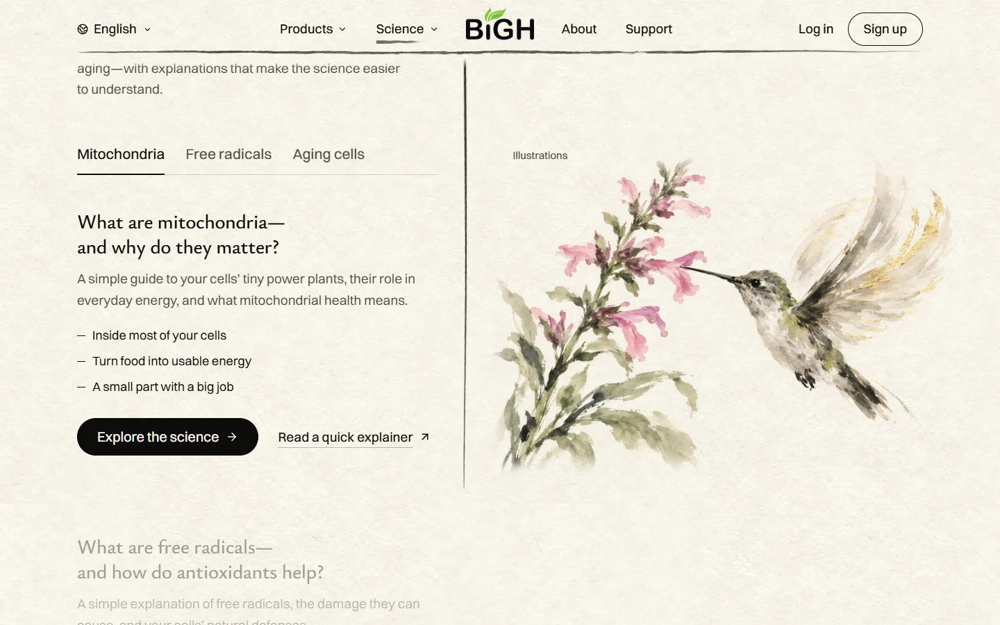
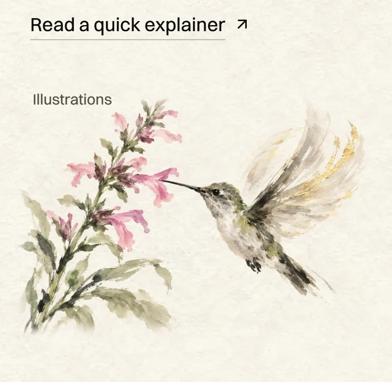
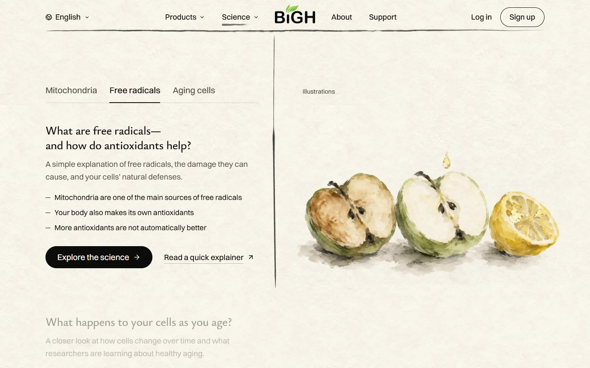
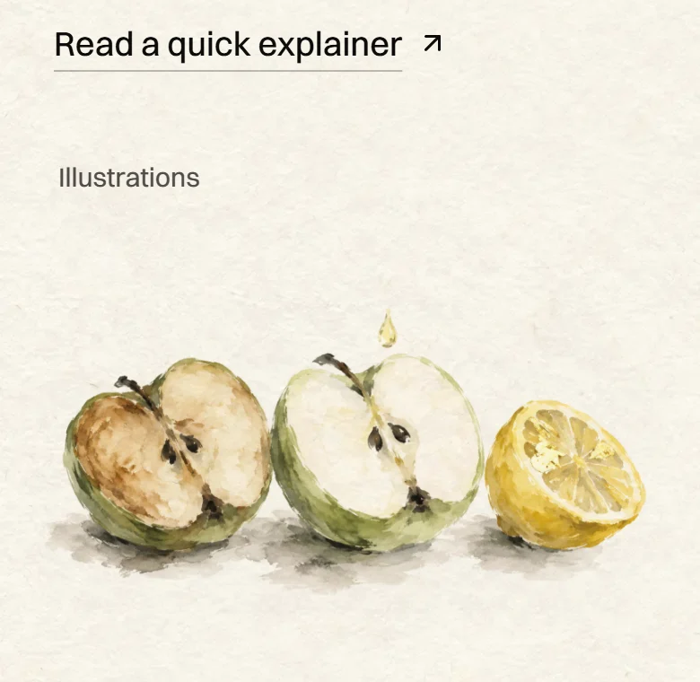
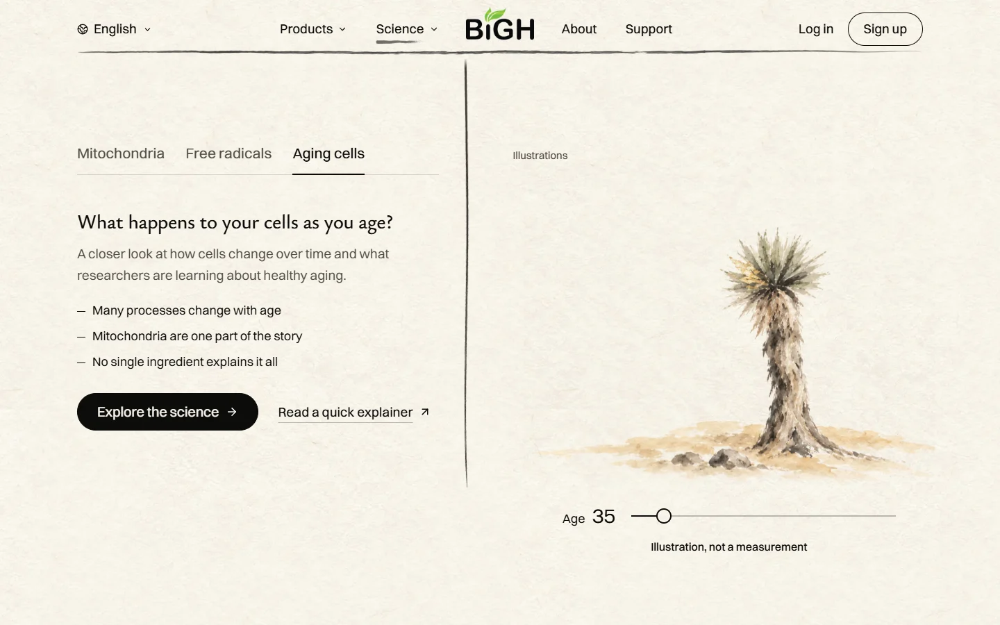
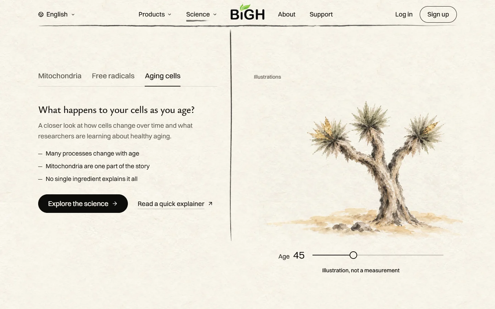
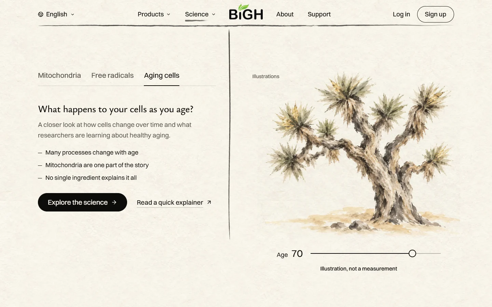
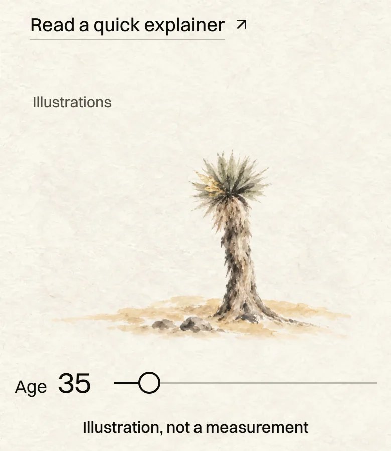
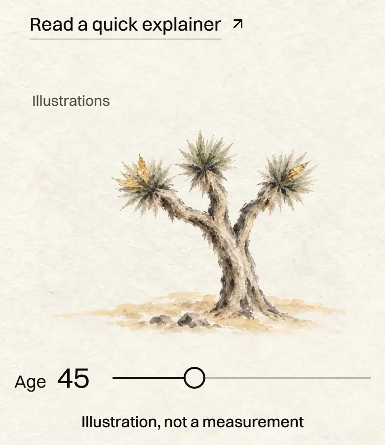
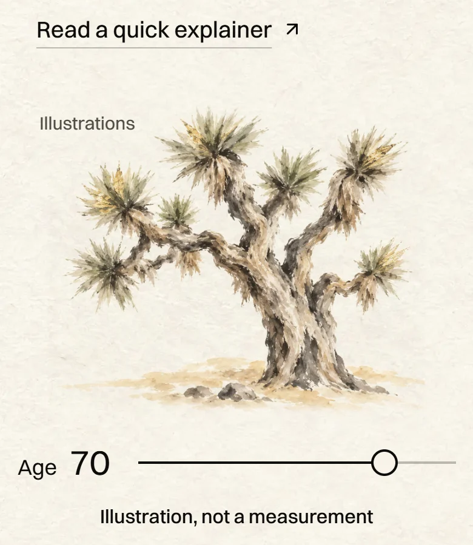

<title>Science Section Paintings</title>
<meta name="claude:viewport-fit-sides" content="cover">
<link rel="preconnect" href="https://fonts.googleapis.com">
<link rel="preconnect" href="https://fonts.gstatic.com" crossorigin>
<link rel="stylesheet" href="https://fonts.googleapis.com/css2?family=Ysabeau:wght@400;500&display=swap">
<style>
  /* Layout: one quiet column like the site itself; each topic is a pair, the laptop view and the phone view. */
  :root {
    --paper: #f5f1e7;
    --ink: #1c1a16;
    --muted: #6b665b;
    --line: #dcd5c4;
    --gold: #9a7424;
    --frame: #ffffff;
    --title: "Ysabeau", "Iowan Old Style", "Palatino Linotype", Georgia, serif;
    --body: system-ui, -apple-system, "Segoe UI", Roboto, sans-serif;
  }
  @media (prefers-color-scheme: dark) {
    :root:not([data-theme="light"]) {
      --paper: #171611;
      --ink: #ece6d6;
      --muted: #a8a191;
      --line: #36332b;
      --gold: #d6ad55;
      --frame: #24221c;
      color-scheme: dark;
    }
  }
  :root[data-theme="dark"] {
    --paper: #171611;
    --ink: #ece6d6;
    --muted: #a8a191;
    --line: #36332b;
    --gold: #d6ad55;
    --frame: #24221c;
    color-scheme: dark;
  }

  body {
    background: var(--paper);
    color: var(--ink);
    font: 17px/1.55 var(--body);
  }
  .page {
    max-width: 1080px;
    margin: 0 auto;
    padding-left: max(16px, env(safe-area-inset-left, 0px));
    padding-right: max(16px, env(safe-area-inset-right, 0px));
    padding-block: 40px 72px;
    display: grid;
    gap: 64px;
  }
  h1, h2 {
    font-family: var(--title);
    font-weight: 500;
    text-wrap: balance;
    margin: 0;
    line-height: 1.12;
  }
  h1 { font-size: clamp(2.2rem, 6vw, 3.4rem); }
  h2 { font-size: clamp(1.6rem, 4vw, 2.2rem); }
  p { margin: 0; max-width: 62ch; }
  .lead { display: grid; gap: 14px; }
  .lead p { color: var(--muted); font-size: 1.1rem; }
  .tag {
    font-size: 0.8rem;
    letter-spacing: 0.08em;
    text-transform: uppercase;
    color: var(--gold);
  }

  .topic { display: grid; gap: 18px; border-top: 1px solid var(--line); padding-top: 28px; }
  .topic header { display: grid; gap: 8px; }
  .topic header p { color: var(--muted); }

  .views {
    display: grid;
    grid-template-columns: minmax(0, 3fr) minmax(0, 1fr);
    gap: 20px;
    align-items: start;
  }
  .views.three { grid-template-columns: repeat(3, minmax(0, 1fr)); }
  figure { margin: 0; display: grid; gap: 8px; min-width: 0; }
  figure a { display: block; }
  figure img {
    display: block;
    width: 100%;
    height: auto;
    border: 1px solid var(--line);
    border-radius: 6px;
    background: var(--frame);
  }
  figcaption { font-size: 0.85rem; color: var(--muted); }
  a:focus-visible { outline: 2px solid var(--gold); outline-offset: 3px; border-radius: 6px; }

  .stand { display: grid; gap: 16px; border-top: 1px solid var(--line); padding-top: 28px; }
  .score {
    font-family: var(--title);
    font-size: 2.4rem;
    line-height: 1;
  }
  .score small { font-size: 1rem; color: var(--muted); font-family: var(--body); }
  ul { margin: 0; padding-left: 1.2em; display: grid; gap: 8px; max-width: 62ch; }
  .note { font-size: 0.9rem; color: var(--muted); }

  @media (max-width: 720px) {
    .views { grid-template-columns: minmax(0, 1fr); }
    .views .phone { max-width: 320px; }
    .views.three { grid-template-columns: repeat(3, minmax(0, 1fr)); gap: 10px; }
  }
</style>

<main class="page">
  <section class="lead">
    <span class="tag">Homepage · Make sense of the science.</span>
    <h1>Built: one painting per topic</h1>
    <p>These are screenshots of the finished, built site. The mitochondrion now appears only once, in "Tiny power plants." The words are unchanged. Tap any picture to see it full size.</p>
  </section>

  <section class="topic">
    <header>
      <span class="tag">Tab 1 · Mitochondria</span>
      <h2>A hummingbird at California sage</h2>
      <p>Energy you can see. The page's slow band of light crosses the gold leaf in its wings as you read.</p>
    </header>
    <div class="views">
      <figure>
        <a href="built/desktop-energy.webp" target="_blank" rel="noopener"></a>
        <figcaption>Laptop</figcaption>
      </figure>
      <figure class="phone">
        <a href="built/phone-energy.webp" target="_blank" rel="noopener"></a>
        <figcaption>Phone</figcaption>
      </figure>
    </div>
  </section>

  <section class="topic">
    <header>
      <span class="tag">Tab 2 · Free radicals</span>
      <h2>A cut apple and a Meyer lemon, repainted</h2>
      <p>Softer now, with no drawn edges. One half has browned. The half with lemon juice stays fresh. It sits on the same ground line as the Joshua tree.</p>
    </header>
    <div class="views">
      <figure>
        <a href="built/desktop-balance.webp" target="_blank" rel="noopener"></a>
        <figcaption>Laptop</figcaption>
      </figure>
      <figure class="phone">
        <a href="built/phone-balance.webp" target="_blank" rel="noopener"></a>
        <figcaption>Phone</figcaption>
      </figure>
    </div>
  </section>

  <section class="topic">
    <header>
      <span class="tag">Tab 3 · Aging cells</span>
      <h2>A Joshua tree that ages with the slider</h2>
      <p>Young, it is one trunk. In its middle years it has three arms. Old, it has many. The slider always shows one whole tree, never two blended. It opens at 45.</p>
    </header>
    <div class="views three">
      <figure>
        <a href="built/desktop-age35.webp" target="_blank" rel="noopener"></a>
        <figcaption>Age 35</figcaption>
      </figure>
      <figure>
        <a href="built/desktop-age45.webp" target="_blank" rel="noopener"></a>
        <figcaption>Age 45 (opens here)</figcaption>
      </figure>
      <figure>
        <a href="built/desktop-age70.webp" target="_blank" rel="noopener"></a>
        <figcaption>Age 70</figcaption>
      </figure>
    </div>
    <div class="views three">
      <figure>
        <a href="built/phone-age35.webp" target="_blank" rel="noopener"></a>
        <figcaption>Phone, 35</figcaption>
      </figure>
      <figure>
        <a href="built/phone-age45.webp" target="_blank" rel="noopener"></a>
        <figcaption>Phone, 45</figcaption>
      </figure>
      <figure>
        <a href="built/phone-age70.webp" target="_blank" rel="noopener"></a>
        <figcaption>Phone, 70</figcaption>
      </figure>
    </div>
  </section>

  <section class="stand">
    <span class="tag">My honest score</span>
    <p class="score">8.5 <small>out of 10</small></p>
    <p>The hummingbird and the Joshua tree are at the homepage's bar. What still holds the section back:</p>
    <ul>
      <li>The apple is better but still reads as soft watercolour more than brush and ink. Five tries gave the same look.</li>
      <li>The gold on the lemon and the tree is pale. It reads as yellow paint more than gold leaf.</li>
      <li>Gold on the lemon stretches the rule that gold means energy. It can be plain yellow if you prefer.</li>
    </ul>
    <p class="note">Checked on the built site: the homepage check passed 282 of 282 and the menu check 436 of 436. It is saved on its own branch and is not live. Codex painted these on your ChatGPT plan, with no extra spend.</p>
  </section>
</main>
